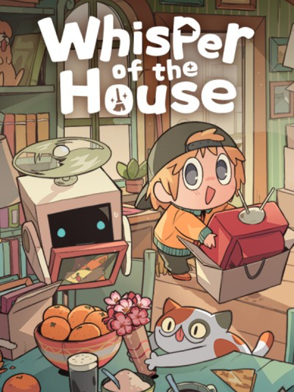

Whisper of the House
Whisper of the House
Details
|  | |
| Playtime | Not Played |
| Last Activity | Never |
| Added | 2025-10-05 23:49:39 |
| Modified | 2025-10-05 23:50:04 |
| Completion Status | Not Played |
| Library | Steam |
| Source | Steam |
| Platform | Macintosh PC (Windows) |
| Release Date | 2025-08-27 |
| Community Score | |
| Critic Score | |
| User Score | |
| Genre | Indie Simulator |
| Developer | |
| Publisher | Lightning Games |
| Feature | Single Player |
| Links | Steam Twitch Discord Subreddit |
| Tag | 2D Atmospheric Casual Colorful Cozy Cute Exploration Hidden Object Immersive Sim Isometric Life Sim Multiple Endings Mystery Pixel Graphics Point & Click Puzzle Relaxing Simulation Singleplayer Story Rich |
Description


Welcome to Whisper Town—a cozy and heartwarming game about decorating, organizing, and uncovering little stories.
You’ll step into the role of the town’s all-around housekeeper, taking on charming, quirky tasks: moving into new homes, tidying cluttered rooms, preparing new shops, sorting through treasured keepsakes… even tracking down cats! Complete each task to earn rewards, collect furniture, and freely design a space that’s entirely your own.
As you help others put their lives in order, you may unknowingly change the course of their stories, and slowly discover the unusual secrets hidden in this charming little town…


For lovers of tidy spaces! Turn cluttered rooms into warm, organized havens in a soothing, detail-rich gameplay experience. The teacup by the bed, the plant by the window, the letters covered in dust—each one will find its perfect “home” in your hands. Sweep through forgotten corners, sort every keepsake, and uncover the quiet stories and traces of life hidden behind every item you place.


Ahem… but some furniture is just begging to be messed with!
You might find yourself pressing the button on that vintage gramophone, giving the rubber duck by the tub a playful squeeze, or sneakily pulling a tissue from the box. It’s as if this little town is whispering to you through these tiny, mischievous gestures.

In Whisper Town, every resident has untold troubles or hidden wishes—secrets buried in a garden, a faded photo left in a hospital room, an alchemy workshop long abandoned. Piece together the smallest clues to uncover their unspoken memories, weaving a story where mystery and love intertwine.


Your style, your rules. With over 1,800 pieces of furniture and more than 10 unique home layouts, every space is yours to design. Line a study wall from floor to ceiling with bookshelves, fill a sunlit mini-greenhouse with blooms, or stock a doomsday shelter to the brim with supplies—create the home you’ve always dreamed of. However you imagine it, every detail is yours to choose.

Wallpapers, flooring, and select pieces of furniture can be recolored or retextured to perfectly match your mood and style.
Dozens of items also feature custom sound effects—tap the drums, snap a photo, run the tap. In this home, you don’t just see it—you hear it.


As you spend time with the townsfolk, you grow closer to them, and slowly form bonds with them. But beneath these warm, everyday moments, the town hides something.
A number—42—flickers above the museum.
A sudden rainbow across the sky. A “heart-stealing ghost” haunts the well. Tentacles creep from the cracks.
What lies behind these mysteries?
Perhaps the one destined to uncover the truth… is you.